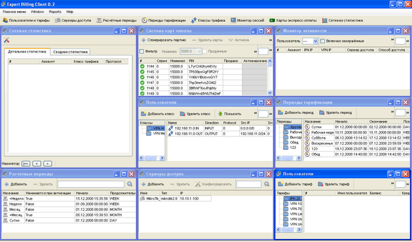

|
Expert Billing System позволяет полностью автоматизировать весь процесс взаиморасчётов провайдера с клиентами. Она отличается простым и удобным интерфейсом пополнения счетов, работы с картами экспресс-оплаты (включая возможность их печати прямо из оболочки администрирования). Также Expert Billing System позволяет производить печать договоров на подключение для физических/юридических лиц и предоставляет интерфейс кассира.
С помощью Expert Billing System можно спроектировать тарифные планы таким образом, чтобы в них «пересекались» различные виды тарификации: абонентская плата, разовые платежи, списание денег за трафик (с возможностью указать точный период времени и направления трафика), списание денег за время по гибким правилам. Система позволяет автоматически начислять и списывать предоплаченный трафик/время в начале каждого расчётного периода, производить доснятие суммы до стоимости тарифного плана, динамически управлять скоростью работы клиента без обрыва соединения и гибко устанавливать лимиты трафика по указанным направлениям с указанием произвольного периода времени.

Применяемая технология управления состоянием пользователя в списках контроля доступа (ACL) на серверах доступа, имеет возможность работы совместно с обычной RADIUS авторизацией. Стоит также отметить, что поведение системы на сервере доступа полностью настраивается. Вы сможете вручную указать, когда и какие действия нужно производить при создании либо удалении клиента, его активации или деактивации, каким образом устанавливать и менять скорость для каждого клиента и прерывать сессии по отдельности для VPN и IPN подключений.
В профиле пользователя предусмотрен расширенный набор полей для хранения всех необходимых данных и дополнительный набор полей для информации о юридических лицах. Предусмотрена возможность кредитования клиентов.
Механизм управления состоянием аккаунтов позволяет разрешать или запрещать PPTP/PPPOE/DHCP-авторизацию при отрицательном балансе либо наличии блокировок, что может быть удобно, если не требуется ограничивать возможность работы клиентов полностью. В индивидуальном порядке настраиваются разрешения для пользователей по работе с веб-кабинетом и активацией карт экспресс-оплаты.
Expert Billing System позволяет производить привязку аккаунтов к IP- либо MAC адресам (в зависимости от способа авторизации и тарифного плана).
Ведение абонентской базы
| • | детальный профиль клиента; |
| • | печать договоров на подключение; |
| • | возможность работы в кредит с установлением размера кредита; |
Тарификация услуг
| • | создание календарей для гибкой тарификации услуг; |
| • | использование расчётных периодов с возможностью активации расчётного периода в момент подключения пользователя на тарифный план; |
| • | списание периодических услуг с указанием расчётного периода, способа списания (в начале, в конце, на протяжении расчётного периода), условий списания (при положительном, при отрицательном, при любом балансе); |
| • | возможность продажи «пакета услуг» с доснятием необходимой суммы в конце расчётного периода; |
| • | настраиваемая система разовых и периодических подключаемых услуг с воможностью тесной интеграции в инфраструктуру провайдера для продажи дополнительных сервисов. |
Учет трафика
| • | неограниченное количество обсчитываемых каналов и сегментов сети; |
| • | возможность разделения трафика по портам, протоколам, IP сети отправителя и получателя; |
| • | возможность сохранения всей подробной статистики по трафику и последующего её просмотра; |
| • | гибкая тарификация трафика (предоплаченный трафик, лимиты трафика c возможностью блокировки или изменения скорости работы абонента); |
| • | уникальная возможность учёта трафика по различным критериям: периоду тарификации, большему из классов, сумме классов, большему направление в классе, сумме направлений в классе и т.д.; |
Серверы доступа
| • | возможность работать сразу с несколькими серверами доступа; |
| • | возможность создания логических серверов доступа для одного физического; |
| • | настраиваемое поведение сервера доступа при наступлении событий; |
| • | тесное взаимодействие с серверами доступа под управлением MikroTik; |
| • | унифицированный интерфейс работы с системой динамического шейпирования; |
| • | возможность обслуживания запросов на получение IP адреса через DHCP (только MikroTik); |
| • | 802.1x авторизация по логину/паролю, номеру порта или по мак-адресу на коммутаторах D-link; |
Мониторинг
| • | монитор коммутируемых подключений с возможностью сброса сессий; |
| • | мониторинг состояния IPN пользователей; |
| • | шесть типов настраиваемых отчётов для полноценного анализа статистических данных; |
| • | просмотр детальной и сводной сетевой статистики; |
Учёт времени
| • | возможность учёта услуг по времени; |
| • | возможность задания предоплаченного времени; |
| • | гибкая тарификация с различной стоимостью минуты в зависимости от времени суток, дня недели и других временных рамок; |
Контроль доступа
| • | возможность предоставления доступа в интернет через VPN (PPTP/PPPOE) посредством авторизации на RADIUS-сервере, поддерживающим методы авторизации PAP/CHAP/MSCHAP2; |
| • | возможность жесткой привязки IP- и МАС-адреса к аккаунту; |
| • | автоматический сброс коммутируемых сессий; |
| • | автоматическая блокировка IPN-пользователей; |
| • | возможность указания скорости работы в зависимости от времени суток, дня недели и т.д.; |
| • | возможность указания разрешённого времени работы; |
| • | контролируемая возможность авторизации на RADIUS-сервере при недостаточном балансе или наличии блокировок; |
| • | возможность указания индивидуальных настроек скорости для каждого абонента; |
| • | возможность разрешения/запрещения доступа в веб-кабинет; |
| • | возможность разрешения/запрещения активации карт экспресс-оплаты; |
Карты доступа
| • | возможность генерации карт оплаты и доступа с нужным балансом для указанных тарифных планов и серверов доступа; |
| • | гибкая работа с дилерами и распространителями карт оплаты и доступа; |
| • | возможность указания скидок и рассрочек по оплате для дилеров; |
| • | история продаж и взаиморасчётов с дилерами; |
| • | возможность указания срока действия карт; |
| • | печать карт через интерфейс администратора; |
| • | выгрузка информации о картах в XML-файл; |
| • | гибкий фильтр по партиям карт; |
Бухгалтерия
| • | настраиваемые шаблоны кассовых чеков, договоров, накладных на продажу карт; |
| • | пополнение лицевого счета через интерфейс администратора, интерфейс кассира, картами экспресс-оплаты, обещанным платежом; |
| • | ведение статистики по всем операциям с лицевым счётом с возможностью их отмены; |
| • | открытый API для работы с лицевым счётом абонентов; |
| • | интеграция с платёжной системой ОСМП; |
| • | просмотр информации о платежах с фильтром по кассиру, абоненту и периоду времени. |
WEB-интерфейс
| • | просмотр учётной информации; |
| • | просмотр информации об операциях с лицевым счётом; |
| • | просмотр информации о коммутируемых подключениях; |
| • | просмотр информации об остатке предоплаченного трафика; |
| • | просмотр информации об остатке трафика по лимитам; |
| • | настраиваемая возможность пополнения счёта обещанным платежом; |
| • | самостоятельное изменения списка подключаемых услуг; |
| • | изменение тарифного плана; |
| • | график загрузки по направлениям; |
| • | просмотр контактной информации о провайдере; |
| • | возможность простого изменения кабинета под свои нужды; |
Интерфейс кассира
| • | просмотр учётной информации по абонентам; |
| • | гибкий фильтр информации по абонентам; |
| • | возможность пополнения баланса с печатью кассового чека; |
| • | возможность перевода абонентов на другие тарифные планы; |
| • | просмотр состояния лимитов и остатка предоплаченного трафика; |
| • | изменение списка подключаемых услуг. |
Производительность
| • | высокопроизводительный RADIUS-сервер, способный обрабатывать сотни запросов в секунду даже на бюджетном сервере; |
| • | высокопроизводительная система сбора и обработки NetFlow статистики; |
| • | возможность масштабирования системы путём установки дополнительных RADIUS-серверов и коллекторов статистики; |
This help file was created with an unregistered evaluation copy of Help & Manual. © EC Software. All rights reserved. This message will not appear if you compile this help file with the registered version of Help & Manual.
|